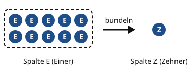

Zehnerpotenzen
Mit einem KI-Tutor lernen
Ein KI-Tutor erklärt dir diese Seite und hilft dir bei den Aufgaben. Wähl deinen Assistenten:
Mit Claude öffnen Mit ChatGPT öffnen Mit Mistral Vibe öffnen
Du nutzt dein eigenes Konto beim Anbieter. Der Assistent ist kein Angebot von lernapps.net: lernapps liefert nur Inhalte und Aufgaben. Die Wahl gilt für alle Seiten, nur auf diesem Gerät.
Wie zählst du sehr viele Plättchen?
Wenn du sehr viele Plättchen zählen willst, bündelst du immer zehn zu einem. Mira und Ben zählen so die Plättchen in der Dose. Sie bündeln immer zehn Plättchen einer Spalte zu einem Plättchen in der Spalte links davon. Die Zahl bleibt dabei gleich.

© CC-BY-4.0Der gestrichelte Rahmen fasst zehn Plättchen der Spalte E zusammen. Beim Bündeln werden sie zu einem Plättchen in der Spalte Z.
Aufgabe
Lösung
Richtige Antwort: 100
Zehn Zehner sind 10 · 10 = 100. Ein Plättchen in der Spalte H ist also 100 Einer wert.
Wie schreibst du große Zahlen kurz?
Dafür bündelst du weiter: Jede Spalte ist zehnmal so viel wert wie die Spalte rechts davon. Ein Plättchen in der Spalte H ist 10 · 10 wert, in der Spalte T ist es 10 · 10 · 10 wert. Das sind Zehnerpotenzen: Die Basis ist 10, der Exponent sagt, wie oft die 10 als Faktor vorkommt.
| Spalte | Wert und Potenz |
|---|---|
| Z (Zehner) | 10 = 10¹ |
| H (Hunderter) | 100 = 10² |
| T (Tausender) | 1000 = 10³ |
| ZT (Zehntausender) | 10 000 = 10⁴ |
| HT (Hunderttausender) | 100 000 = 10⁵ |
| M (Million) | 1 000 000 = 10⁶ |
| ZM (Zehnmillion) | 10 000 000 = 10⁷ |
| HM (Hundertmillion) | 100 000 000 = 10⁸ |
| Mrd. (Milliarde) | 1 000 000 000 = 10⁹ |
Die Zehnerpotenz 10⁵
Der Exponent 5 zeigt, dass fünf Faktoren 10 vorkommen. Er zeigt auch, dass hinter der 1 fünf Nullen stehen. Mit Zehnerpotenzen schreibst du große Zahlen kurz: 5000 = 5 · 1000 = 5 · 10³.
Ist 10³ gleich 30?
Merke
ist 1000 und nicht 30. Bei Zehnerpotenzen sagt der Exponent auch, wie viele Nullen hinter der 1 stehen. Er ist nicht der Faktor, mit dem du malnimmst.
Übung
Aufgabe
Drei Beispielaufgaben, jede mit ihrer Lösung:
Aufgabe Nr. 1
Schreibe die Zehnerpotenz „10 hoch 9“ als Zahl, ohne Lücke.
Tipp
Wie viele Nullen stehen hinter der 1?
Lösung
- Die Basis 10 kommt 9-mal als Faktor vor, hinter der 1 stehen 9 Nullen.
- Die Zahl besteht aus einer 1 und 9 Nullen.
Richtige Antwort: 1 000 000 000
Aufgabe Nr. 2
Schreibe die Zehnerpotenz „10 hoch 3“ als Zahl, ohne Lücke.
Tipp
Wie viele Nullen stehen hinter der 1?
Lösung
- Die Basis 10 kommt 3-mal als Faktor vor, hinter der 1 stehen 3 Nullen.
- Die Zahl besteht aus einer 1 und 3 Nullen.
Richtige Antwort: 1000
Aufgabe Nr. 3
Schreibe die Zehnerpotenz „10 hoch 2“ als Zahl, ohne Lücke.
Tipp
Wie viele Nullen stehen hinter der 1?
Lösung
- Die Basis 10 kommt 2-mal als Faktor vor, hinter der 1 stehen 2 Nullen.
- Die Zahl besteht aus einer 1 und 2 Nullen.
Richtige Antwort: 100
Aufgabe
Drei Beispielaufgaben, jede mit ihrer Lösung:
Aufgabe Nr. 1
Schreibe 4 · 10 hoch 3 als Zahl, ohne Lücke.
Tipp
Schreibe erst die Zehnerpotenz als Zahl. Dann nimmst du sie mal 4.
Lösung
- 10 hoch 3 hat 3 Nullen hinter der 1.
- Davor kommt der Faktor 4: Die Zahl besteht aus 4 und 3 Nullen.
Richtige Antwort: 4000
Aufgabe Nr. 2
Schreibe 6 · 10 hoch 2 als Zahl, ohne Lücke.
Tipp
Schreibe erst die Zehnerpotenz als Zahl. Dann nimmst du sie mal 6.
Lösung
- 10 hoch 2 hat 2 Nullen hinter der 1.
- Davor kommt der Faktor 6: Die Zahl besteht aus 6 und 2 Nullen.
Richtige Antwort: 600
Aufgabe Nr. 3
Schreibe 9 · 10 hoch 4 als Zahl, ohne Lücke.
Tipp
Schreibe erst die Zehnerpotenz als Zahl. Dann nimmst du sie mal 9.
Lösung
- 10 hoch 4 hat 4 Nullen hinter der 1.
- Davor kommt der Faktor 9: Die Zahl besteht aus 9 und 4 Nullen.
Richtige Antwort: 90 000
Aufgabe
Lösung
Richtige Antwort: 12
Hinter der 1 stehen zwölf Nullen, also sind es zwölf Faktoren 10.
Aufgabe
Lösung
Richtige Antwort: 1. 10², 2. 10³, 3. 10⁴, 4. 10⁵
Mit jedem Exponenten mehr kommt eine Null hinzu und die Zahl wird zehnmal so groß.
Aufgabe
Lösung
Richtige Antwort: 1000
Das sind 10 · 10 · 10 = = 1000 Plättchen.
Das kannst du jetzt
Du kannst große Zahlen als Zehnerpotenz schreiben und lesen. Für das Fest in der Spielecke bleibt noch zu klären, was die Kinder anziehen. Als Nächstes zählen Mira und Ben die Möglichkeiten für ihre Outfits.
Fehler gefunden oder eine Idee für diese App?